주소
ADDRESS · 우편번호 · 기본 주소 · 상세 주소 세 칸을 한 묶음으로
주소 필드란
- 1.1필드 추가와 속성 패널 구성
1.1필드 추가와 속성 패널 구성
개요
주소(ADDRESS) 는 우편번호 · 기본 주소 · 상세 주소 세 칸을 한 필드로 묶어 받는 입력란입니다. 다른 타입과 가장 크게 다른 점이 여기에 있습니다 — 화면에는 칸이 셋으로 보이지만 저장되는 값은 하나이고, 필수 · 검증 · 숨김 같은 설정도 모두 세 칸 전체에 한꺼번에 적용됩니다.
화면 설명
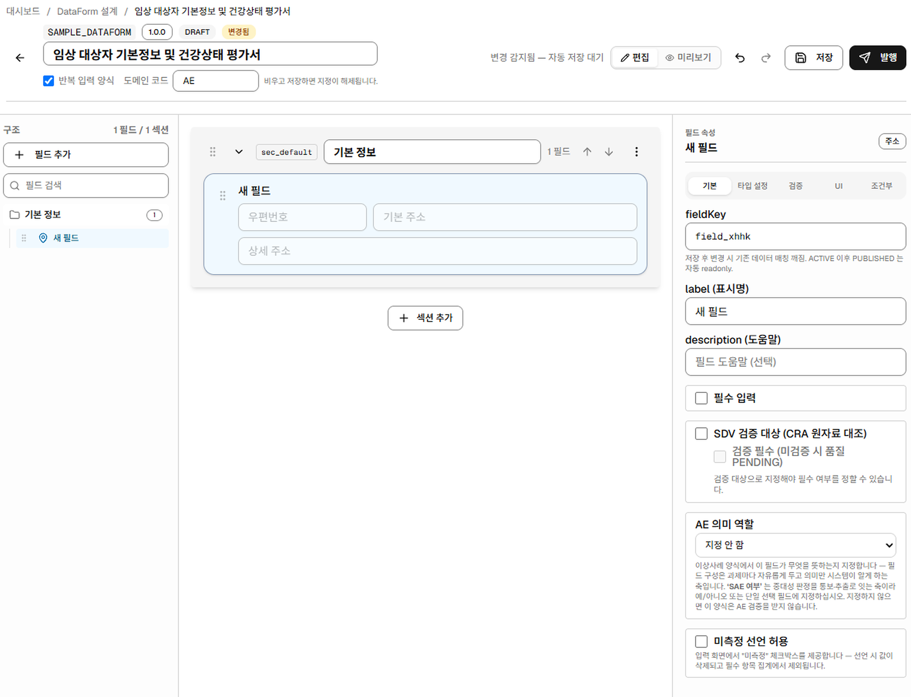
[+ 필드 추가] — 여기에서 타입을 지정하면 필드가 생성됩니다.
구조 트리에 새 필드가 추가됩니다. 아이콘이 위치 표시 모양입니다.
WYSIWYG 캔버스에 세 칸이 함께 표시됩니다 — 위쪽에 우편번호와 기본 주소가 나란히, 아래쪽에 상세 주소가 한 줄로 배치됩니다.
fieldKey — 값이 저장되는 실제 키입니다. 세 칸을 묶은 하나의 키입니다. 2.1
label (표시명) · description (도움말) — 화면에 표시되는 이름과 보조 설명입니다. 2.1
필수 입력 · SDV 검증 대상 — 2.2 · 2.3 에서 다룹니다.
AE 의미 역할 — 화면 안내가 밝히듯 예/아니오 또는 단일 선택 필드가 지정 대상이므로 이 타입에서는 지정하지 않습니다.
미측정 선언 허용 — 2.4 에서 다룹니다.
타입 배지 「주소」 — 선택한 필드의 타입입니다. 추가한 뒤에는 변경할 수 없습니다.
속성 탭 5종 — 기본 · 타입 설정 · 검증 · UI · 조건부. 이 가운데 타입 설정 탭은 주소에 설정 항목이 하나도 없어 이 매뉴얼에서 다루지 않습니다 — 그래서 2장이 기본, 3장이 검증 탭입니다. 6.2
유의사항
필수 확인 데이터 손상 · 폼 완료 불가
- • ⛔ 주소는 개인정보입니다. 피험자의 거주지는 식별로 바로 이어지므로 꼭 필요한 경우에만 수집하고, 해당하지 않는 피험자에게는 조건부 표시로 아예 묻지 마십시오. 5장
- • 타입은 추가한 뒤에 변경할 수 없고, 발행(PUBLISH) 이후에는 구조 자체를 변경할 수 없습니다. 잘못 선택했다면 필드를 삭제하고 다시 추가하십시오.
오해하기 쉬운 동작
- • 세 칸이지만 하나의 필드입니다. 우편번호만 따로 필수로 지정하거나 상세 주소만 따로 검증하는 설정은 제공되지 않습니다. 2.2 · 3.1
- • 우편번호 검색 기능은 없습니다. 세 칸 모두 직접 입력이며, 지도나 주소 찾기 창이 열리지 않습니다. 6.2
기본 탭 — 이름 · 필수 · 검증 대상 · 미측정
- 2.1fieldKey · 표시명 · 도움말
- 2.2필수 입력
- 2.3SDV 검증 대상 (CRA 원자료 대조)
- 2.4미측정 선언 허용
2.1fieldKey · 표시명 · 도움말
개요
필드의 이름을 정하는 영역입니다. 저장 키(fieldKey)와 화면에 표시되는 이름(label)은 서로 다른 값이며, 변경해도 되는 시점이 다릅니다. 주소는 누구의 어떤 주소인지 분명해야 하므로 표시명을 구체적으로 적으십시오.
화면 설명
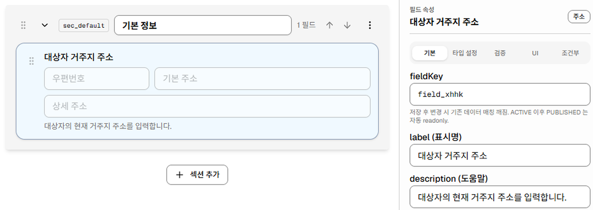
label (표시명) — 입력 화면에 표시할 항목 이름을 입력합니다. 캡처는 대상자 거주지 주소 입니다.
캔버스 필드 제목으로 표시됩니다. 세 칸 전체를 아우르는 하나의 제목입니다.
description (도움말) — 표시명 아래에 표시할 보조 설명을 입력합니다. 공란으로 두면 표시되지 않습니다.
세 칸 아래 회색 글씨로 표시됩니다. 캡처는 “대상자의 현재 거주지 주소를 입력합니다.” 입니다.
fieldKey — 값이 저장되는 실제 키입니다. 필드를 추가하면 field_xhhk 처럼 자동으로 부여되며, 화면 안내와 같이 “저장 후 변경 시 기존 데이터 매칭 깨짐” 입니다.
유의사항
필수 확인 데이터 손상 · 폼 완료 불가
- • 어느 시점의 어떤 주소인지 표시명에 밝히십시오. 「주소」 만으로는 등록 당시 주소인지 현재 거주지인지 알 수 없어, 같은 칸에 서로 다른 시점의 주소가 섞입니다.
- • 주소가 바뀔 수 있다는 점을 도움말에 적으십시오. 장기 추적 과제에서는 피험자가 이사하는 일이 실제로 발생합니다 — 언제 기준 주소인지 적어 두어야 나중에 해석할 수 있습니다.
- • fieldKey 는 저장한 뒤에 변경하지 마십시오. 이미 입력된 데이터와의 연결이 끊어지고, 이 필드를 참조하던 검증 규칙3.3과 조건부 표시5장도 함께 깨집니다.
오해하기 쉬운 동작
- • 표시명(label)은 언제든 변경할 수 있습니다. 저장된 값에는 영향을 주지 않습니다.
2.2필수 입력
개요
이 필드를 반드시 입력해야 폼을 완료할 수 있게 할지 정합니다. 주소에서 이 설정은 생각하는 것보다 훨씬 느슨하게 동작합니다 — 세 칸 가운데 하나라도 채워져 있으면 '입력됨' 으로 판정되기 때문입니다. 아래 유의사항을 반드시 읽으십시오.
화면 설명
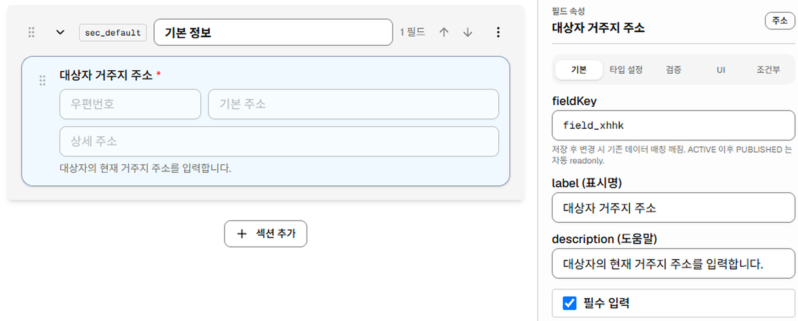
* 가 표시된다필수 입력 — 선택하면 이 필드가 필수 항목이 됩니다.
캔버스 표시명 오른쪽에 빨간 * 가 표시됩니다. 표시는 필드 제목 옆에 하나만 붙습니다 — 칸마다 붙지 않습니다.
label · description — 2.1 에서 입력한 값이 그대로 표시됩니다.
유의사항
필수 확인 데이터 손상 · 폼 완료 불가
- • ⛔ 세 칸 중 하나만 채워도 필수 검사를 통과합니다. 우편번호만 적고 기본 주소를 비워 두어도 폼이 완료됩니다 — 시스템은 묶음 전체가 비었는지만 봅니다. 세 칸을 모두 받아야 한다면 도움말로 안내하고 SDV 단계에서 확인하십시오. 2.1 · 2.3
- • ⛔ 칸별 필수 지정은 제공되지 않습니다. 「우편번호만 필수」 같은 설정은 어느 탭에도 없습니다. 칸을 나누어 관리해야 한다면 단일 행 텍스트 필드 세 개로 만드는 편이 낫습니다. 1.1
- • 숨겨진 필드는 필수 검사에서 제외됩니다. 조건부 표시5장로 감춰진 동안에는 필수여도 비어 있는 상태로 폼이 완료됩니다.
참고
- • 미측정 선언이 켜져 있고 기록자가 선언하면, 필수 항목이어도 폼을 완료할 수 있습니다. 2.4
2.3SDV 검증 대상 (CRA 원자료 대조)
개요
SDV(Source Data Verification) 는 임상연구모니터요원(CRA)이 입력값을 의료기관 원자료와 대조하는 절차입니다. 이 필드를 그 대상으로 지정할지 여기에서 정합니다. 이 설정은 모든 필드 타입에서 동일하므로 화면도 타입과 무관하게 같습니다.
화면 설명
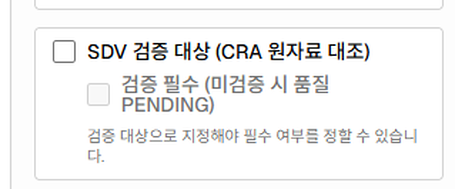

SDV 검증 대상 (CRA 원자료 대조) — 선택하면 이 필드가 CRA 의 대조 목록에 포함됩니다.
선택 상태로 바뀌면서 하위 항목이 활성화됩니다.
검증 필수 (미검증 시 품질 PENDING) — ①을 선택한 뒤에야 지정할 수 있습니다. 선택하면 CRA 가 대조를 마치기 전까지 해당 데이터의 품질 상태가 PENDING 에 머무릅니다.
①을 선택하기 전에는 ②가 흐리게 비활성입니다. 화면 안내와 같이 “검증 대상으로 지정해야 필수 여부를 정할 수 있습니다.”
유의사항
필수 확인 데이터 손상 · 폼 완료 불가
- • ⛔ 주소는 시스템이 전혀 검사하지 않습니다. 우편번호 자릿수도, 기본 주소와 우편번호가 서로 맞는지도 확인되지 않습니다 — 실재하는 주소인지 판단할 수 있는 단계는 SDV 뿐입니다. 3.1
- • ⛔ 세 칸이 모두 채워졌는지도 SDV 에서 확인해야 합니다. 필수 입력은 하나만 있어도 통과시키므로 빈 칸을 걸러 내지 못합니다. 2.2
오해하기 쉬운 동작
- • 값이 변경되면 검증이 해제됩니다. 세 칸 가운데 하나만 고쳐도 묶음 전체의 품질 상태가 PENDING 으로 되돌아가고 CRA 가 다시 대조해야 합니다.
참고
- • 품질 상태는 PENDING → VERIFIED → CLEAN 순으로 진행됩니다. 검증 필수로 지정한 필드가 하나라도 미검증이면 해당 데이터는 CLEAN 이 되지 못합니다.
2.4미측정 선언 허용
개요
답을 확인할 수 없는 경우를 값으로 구분해 기록하는 기능입니다. 주소는 “아직 안 물어봤다” 와 “물어봤지만 알려 주지 않았다” 가 전혀 다른 상황인데, 빈칸으로 두면 둘을 구별할 수 없습니다 — 이 선언이 그 둘을 갈라 줍니다.
화면 설명
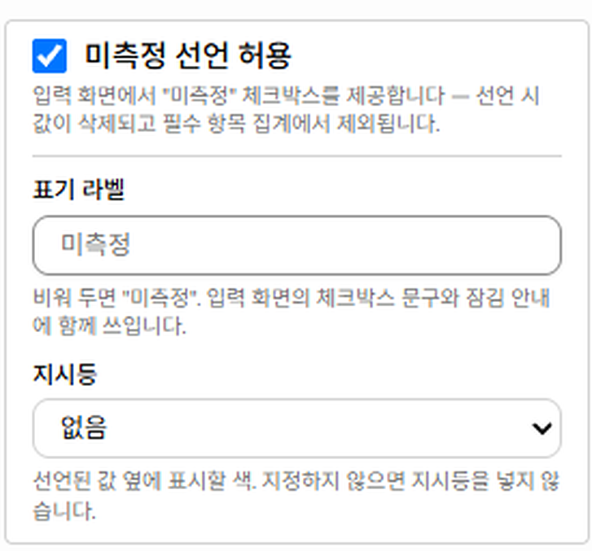
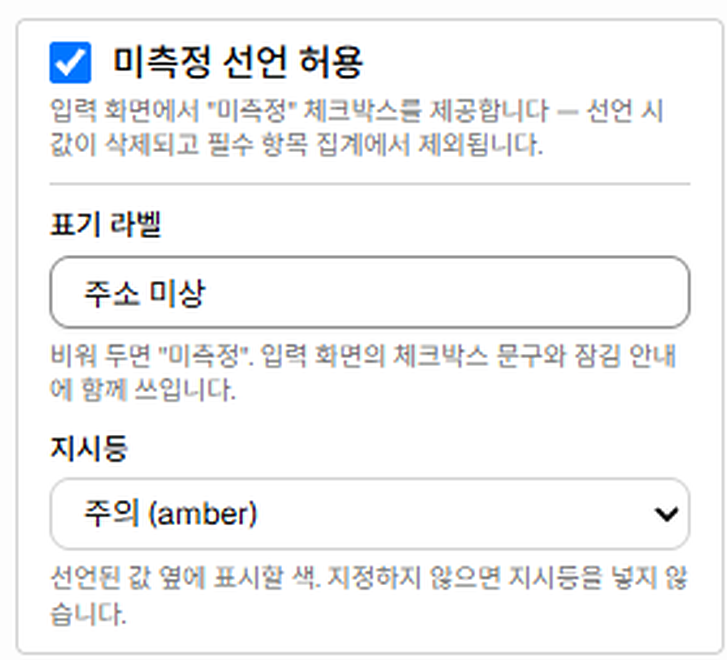
미측정 선언 허용 — 선택하면 입력 화면에 “미측정” 체크박스가 생성되고, 아래 두 항목이 표시됩니다.
표기 라벨 — 공란으로 두면 기본값 “미측정” 이 적용됩니다.
주소 미상 으로 변경하면 이 문구가 입력 화면 체크박스와 잠김 안내에 함께 적용됩니다.
지시등 — 기본값은 없음 입니다.
주의(amber) 로 변경하면 선언된 값 옆에 해당 색 표시가 나타납니다.
유의사항
필수 확인 데이터 손상 · 폼 완료 불가
- • ⛔ 주소에는 이 선언이 특히 필요합니다. 켜지 않으면 기록자가
서울처럼 한 칸만 대충 채워 넘어가게 되고, 필수 검사는 그것을 그대로 통과시킵니다. 2.2 - • ⛔ 선언하면 세 칸이 한꺼번에 삭제됩니다. 화면 안내와 같이 “선언 시 값이 삭제되고 필수 항목 집계에서 제외됩니다.” — 우편번호만 남기는 식의 부분 보존은 되지 않습니다.
오해하기 쉬운 동작
- • 선언된 필드는 필수 집계에서 제외됩니다. 따라서 필수 항목이어도 폼을 완료할 수 있습니다.
참고
- • 지시등을 지정하지 않으면 색 표시가 적용되지 않습니다. 강조가 필요하면 주의(amber) 등을 선택하십시오.
검증 탭 — 저장 전 값 검사
- 3.1검증 규칙이 없는 상태
- 3.2규칙 추가
- 3.3규칙 작성 완료 — 다른 필드와 비교
3.1검증 규칙이 없는 상태
개요
저장하기 전에 값이 조건에 맞는지 검사하는 규칙을 모아 두는 탭입니다. 주소는 시스템이 걸어 주는 검사가 하나도 없는 타입입니다 — 우편번호가 다섯 자리인지도, 기본 주소가 비었는지도 확인되지 않습니다. 그래서 이 탭이 중요한데, 쓸 수 있는 규칙은 사실상 한 종류뿐입니다. 3.3
화면 설명
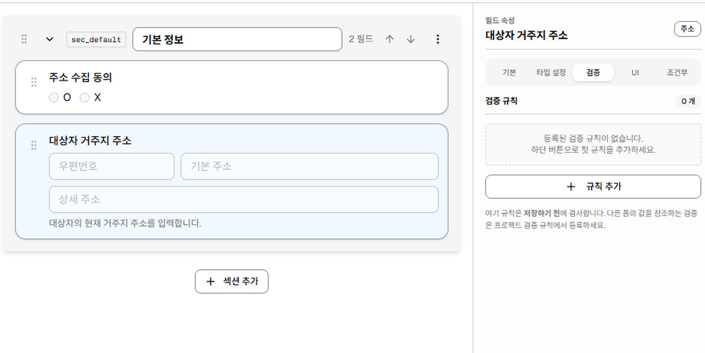
[+ 규칙 추가] — 첫 규칙을 생성합니다. 선택한 뒤의 화면은 3.2 에서 설명합니다.
검증 규칙 영역과 등록된 규칙 수입니다. 처음에는 0 개 이고, 주소는 이 상태에서 아무 검사도 걸려 있지 않습니다.
규칙이 없으면 “등록된 검증 규칙이 없습니다. 하단 버튼으로 첫 규칙을 추가하세요.” 안내가 표시됩니다.
하단 안내 — “여기 규칙은 저장하기 전에 검사합니다. 다른 폼의 값을 참조하는 검증은 프로젝트 검증 규칙에서 등록하세요.”
유의사항
필수 확인 데이터 손상 · 폼 완료 불가
- • ⛔ 우편번호 자릿수를 강제할 수단이 없습니다. 타입 설정 탭에도 항목이 없고, 검증 탭의 형식 (정규식) 은 주소에서 정상 동작하지 않습니다 — 이유는 3.2 에서 설명합니다. 자릿수가 중요하다면 우편번호를 별도의 단일 행 텍스트 필드로 분리하십시오.
- • ⛔ 세 칸이 서로 맞는지 검사할 수 없습니다. 우편번호와 기본 주소가 다른 지역이어도 저장됩니다 — 대조는 SDV 단계에서 사람이 해야 합니다. 2.3
- • ⛔ 다른 폼의 값을 참조하는 검증은 여기서 만들 수 없습니다. 그런 규칙은 「프로젝트 검증 규칙」 화면에서 등록하십시오 — 다만 그 화면에서는 주소 필드를 참조 대상으로 고를 수 없습니다. 6.2
오해하기 쉬운 동작
- • 캡처에는 필드가 둘입니다. 「주소 수집 동의」(단일 선택) 와 「대상자 거주지 주소」 — 앞 필드의 답에 따라 입력 가부가 갈리는 관계라, 3.3 에서 두 필드를 묶는 규칙을 만듭니다.
3.2규칙 추가
개요
3.1 의 [+ 규칙 추가] 를 선택하면 규칙 1 블록이 생성됩니다. 처음에는 「값 범위」 가 잡혀 있는데, 주소는 숫자도 문자열도 아닌 세 칸을 묶은 덩어리라 크기 비교가 성립하지 않습니다. 「다른 필드와 비교」 로 바꾸십시오 — 주소에서 제대로 동작하는 유일한 종류입니다. 3.3
화면 설명
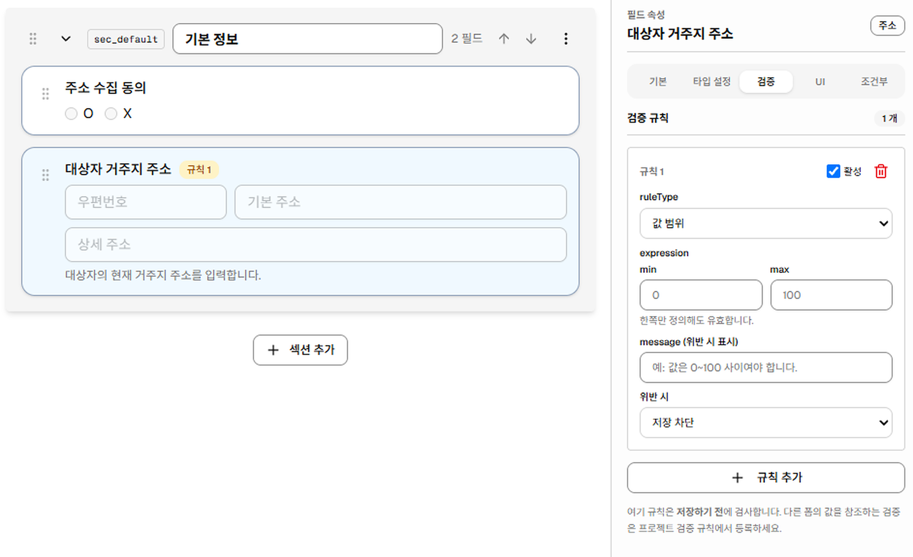
[+ 규칙 추가] — 규칙을 하나 더 생성합니다. (3.1 에서 선택한 것과 같은 버튼입니다.)
캔버스 표시명 옆에 「규칙 1」 배지가 표시됩니다.
규칙 수가 1 개 로 변경됩니다.
활성 체크박스와 삭제 아이콘 — 규칙을 지우지 않고 잠시 중단할 수 있습니다.
ruleType — 규칙의 종류입니다. 생성 직후에는 「값 범위」 이므로 반드시 「다른 필드와 비교」 로 변경하십시오.
min — 값 범위를 골랐을 때 나타나는 하한 칸입니다.
max — 같은 조건에서 나타나는 상한 칸입니다.
message (위반 시 표시) — 규칙을 위반했을 때 사용자에게 표시할 문구입니다.
위반 시 — 저장 차단 또는 경고 중에서 선택합니다. (ruleType 에 따라 고를 수 없게 되기도 합니다 — 3.3)
흐린 글씨 0 · 100 과 “한쪽만 정의해도 유효합니다.” 는 값 범위에 대한 안내이며 설정된 값이 아닙니다.
유의사항
필수 확인 데이터 손상 · 폼 완료 불가
- • ⛔ 「형식 (정규식)」 을 주소에 걸지 마십시오 — 저장이 끝까지 막힙니다. 정규식은 세 칸을 묶은 덩어리를 고정된 내부 문자열로 바꾼 뒤 검사하므로,
^\d{5}$같은 식을 걸면 무엇을 입력해도 위반이 되어 기록자가 폼을 저장할 방법이 없어집니다. - • ⛔ 「값 범위」 · 「소수 자릿수」 는 아무 일도 하지 않습니다. 주소는 숫자가 아니라 비교가 성립하지 않는데, 화면은 고를 수 있게 두고 오류도 내지 않습니다 — 저작자는 규칙을 걸었다고 믿지만 검사는 일어나지 않습니다.
- • message 를 공란으로 두면 사용자는 차단된 이유를 알 수 없습니다. 반드시 입력하십시오.
오해하기 쉬운 동작
- • 주소에서 실제로 동작하는 종류는 「다른 필드와 비교」 뿐입니다. 그 규칙만이 주소 자신의 값이 아니라 다른 필드의 값을 보기 때문입니다. 3.3
3.3규칙 작성 완료 — 다른 필드와 비교
개요
ruleType 을 다른 필드와 비교 로 바꾸면 같은 폼의 다른 필드 값과 견주어 검사합니다. “수집에 동의한 경우에만 주소를 받는다” 처럼 앞 질문의 답에 따라 입력 가부가 갈리는 관계를 표현할 수 있으며, 주소에서 제대로 동작하는 유일한 규칙입니다. 3.2
화면 설명
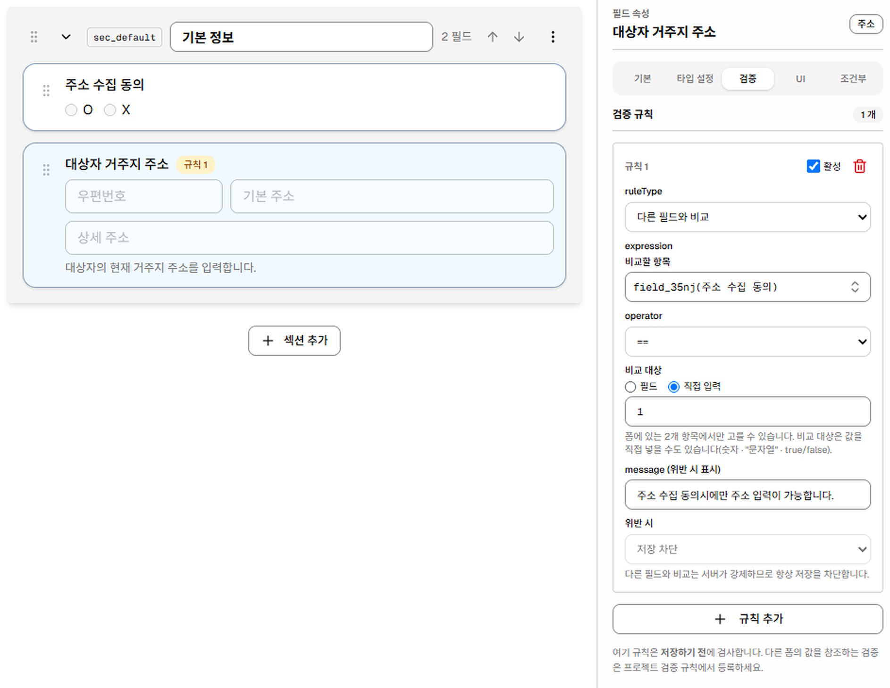
1 일 때만 저장되도록 설정한 상태ruleType = 다른 필드와 비교 — 선택하면 아래 칸이 비교용으로 바뀝니다.
비교할 항목 — 같은 폼의 다른 필드를 선택합니다. 캡처는 field_35nj(주소 수집 동의) 로, 단일 선택 필드입니다.
operator — 비교 방법입니다. 캡처는 ==(같음) 입니다.
비교 대상 — 필드 와 직접 입력 중에서 선택합니다. 캡처는 직접 입력으로 1 을 넣었습니다 — 「주소 수집 동의」 의 저장값 입니다.
message (위반 시 표시) — 캡처는 주소 수집 동의시에만 주소 입력이 가능합니다. 입니다.
위반 시 — 회색으로 비활성입니다. 화면 안내와 같이 “다른 필드와 비교는 서버가 강제하므로 항상 저장을 차단합니다.” — 이 규칙에서는 경고를 고를 수 없고 저장 차단으로 고정됩니다.
화면 안내 — “폼에 있는 2개 항목에서만 고를 수 있습니다. 비교 대상은 값을 직접 넣을 수도 있습니다(숫자 · "문자열" · true/false).” 이 목록에는 주소 필드 자신도 들어 있지만 고르면 안 됩니다.
유의사항
필수 확인 데이터 손상 · 폼 완료 불가
- • ⛔ 비교 대상에는 화면에 보이는 문구가 아니라 저장값을 넣습니다. 캡처의 「주소 수집 동의」 는 화면에
O·X로 보이므로 저장값이 정말1인지 그 필드의 선택지 목록에서 먼저 확인하십시오 — 다르면 동의해도 저장이 막힙니다. - • ⛔ 비교할 항목으로 주소 자신을 고르지 마십시오. 목록에 함께 나오지만 세 칸을 묶은 덩어리는 비교가 성립하지 않아 규칙이 조용히 무력화됩니다. 3.2
오해하기 쉬운 동작
- • 주소를 입력했다가 전부 지워도 이 규칙은 계속 검사됩니다. 세 칸을 비워도 필드는 “건드린 상태” 로 남기 때문입니다 — 동의가 철회된 경우라면 빈칸으로 두는 것으로 끝나지 않습니다. 4.3
- • 이 규칙은 경고로 둘 수 없습니다. 반드시 막아야 하는 관계에만 사용하십시오. 참고로만 알리고 싶다면 조건부 표시5장로 아예 묻지 않는 편이 낫습니다.
UI 탭 — 화면 배치와 안내 문구
- 4.1UI 탭 전체 구성
- 4.2레이아웃 너비
- 4.3읽기 전용 · 숨김
- 4.4placeholder · helpText
4.1전체 구성
개요
값 자체가 아니라 화면에 어떻게 배치하고 어떻게 안내할지를 정하는 탭입니다. 이 탭의 설정은 저장되는 데이터 자체를 변경하지 않습니다. 주소에서는 다섯 항목 가운데 하나가 동작하지 않습니다 — placeholder 가 적용되지 않는 타입이기 때문입니다. 4.4
화면 설명
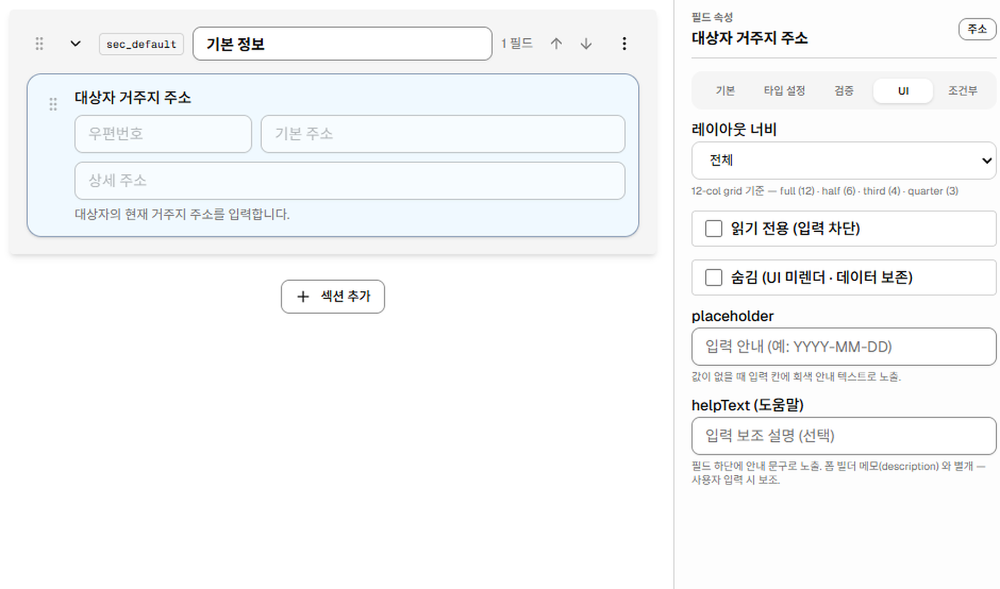
레이아웃 너비 — 폼 한 줄에서 이 필드가 차지할 폭입니다. 4.2
읽기 전용 (입력 차단) — 보여 주되 바꾸지 못하게 합니다. 세 칸이 한꺼번에 잠깁니다. 4.3
숨김 (UI 미렌더 · 데이터 보존) — 화면에서 감춥니다. 세 칸이 한꺼번에 사라집니다. 4.3
placeholder — 주소에서는 적용되지 않습니다. 세 칸의 안내 문구는 타입이 정한 값이라 여기에서 바꿀 수 없습니다. 4.4
helpText (도움말) — 필드 아래에 표시할 안내 문구입니다. 이쪽은 정상 동작합니다. 4.4
타입 배지 「주소」
유의사항
필수 확인 데이터 손상 · 폼 완료 불가
- • ⛔ placeholder 에 입력해도 화면이 바뀌지 않습니다. 세 칸의 “우편번호” · “기본 주소” · “상세 주소” 는 타입이 고정한 문구라 저작자가 바꿀 수 없습니다. 안내가 필요하면 helpText 에 적으십시오. 4.4
- • ⛔ 숨김은 저장된 주소를 지우지 않습니다. 화면에서만 감춰지고 값은 그대로 남아 추출과 감사 추적에 포함됩니다. 4.3
오해하기 쉬운 동작
- • 이 탭의 설정은 저장된 값을 바꾸지 않습니다. 배치와 안내만 달라집니다.
참고
- • 읽기 전용과 숨김을 함께 사용하지 마십시오. 숨김이 우선 적용되어 읽기 전용 설정은 효과가 없습니다. 4.3
4.2레이아웃 너비
개요
폼 한 줄에서 이 필드가 차지할 폭을 정합니다. 주소는 한 줄 안에서 세 칸이 다시 나뉘는 구조라, 폭을 줄이면 가장 좁은 우편번호 칸이 먼저 무너집니다.
화면 설명
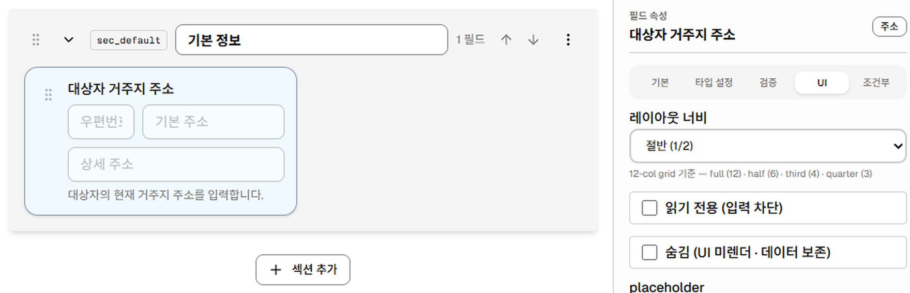
레이아웃 너비 — 전체 · 절반 (1/2) · 1/3 · 1/4 중에서 선택합니다.
캔버스 입력란의 폭이 절반으로 줄면서 우편번호 칸의 안내 문구가 우편번 으로 잘렸습니다. 칸은 그대로 셋이지만 무엇을 적는 칸인지 읽을 수 없게 됩니다.
12-col grid 기준 — 화면 안내와 같이 “full (12) · half (6) · third (4) · quarter (3)” 입니다. 주소는 이 폭을 다시 셋으로 나눠 쓰므로 체감 폭이 더 좁습니다.
유의사항
필수 확인 데이터 손상 · 폼 완료 불가
- • ⛔ 1/3 · 1/4 로 줄이지 마십시오. 절반에서 이미 안내 문구가 잘립니다 — 더 줄이면 기록자가 어느 칸에 무엇을 적는지 알 수 없게 됩니다.
- • 전체 폭을 권합니다. 주소는 한 필드가 사실상 세 칸이라 다른 어떤 타입보다 넓은 자리가 필요합니다. 1.1
오해하기 쉬운 동작
- • 잘린 것은 안내 문구일 뿐 칸의 기능은 그대로입니다. 입력도 저장도 정상 동작하며, 좁아 보일 뿐입니다 — 그래서 더 알아차리기 어렵습니다.
참고
- • 지정하지 않으면 전체 폭이 적용됩니다.
4.3읽기 전용 · 숨김
개요
필드를 보여 주되 바꾸지 못하게 하거나, 화면에서 감추되 값은 보존하는 설정입니다. 둘 다 저장된 주소를 삭제하지 않으며, 세 칸에 한꺼번에 적용됩니다 — 우편번호만 잠그거나 상세 주소만 감추는 설정은 없습니다.
화면 설명
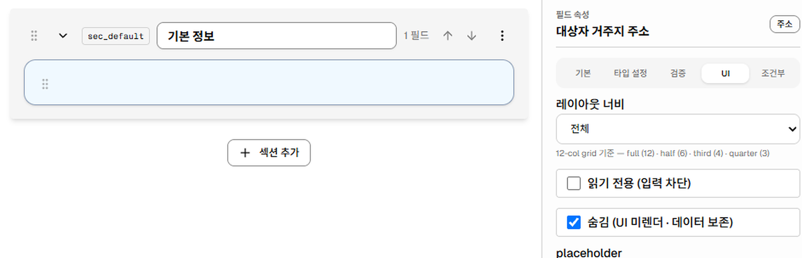
읽기 전용 (입력 차단) — 선택하면 주소가 표시되지만 기록자가 고칠 수 없습니다. 세 칸이 모두 잠깁니다.
숨김 (UI 미렌더 · 데이터 보존) — 선택하면 입력 화면에서 이 필드가 표시되지 않습니다.
캔버스 카드가 빈 테두리만 남습니다. 표시명도 세 칸도 모두 표시되지 않습니다.
레이아웃 너비 — 4.2 에서 설정한 값입니다.
유의사항
필수 확인 데이터 손상 · 폼 완료 불가
- • ⛔ 수집 동의가 철회된 주소를 숨김으로 가리지 마십시오. 값은 그대로 남아 추출과 감사 추적에 포함됩니다 — 보관해서는 안 되는 주소라면 감추는 것이 아니라 세 칸을 모두 지워야 합니다. 3.3
- • ⛔ 잘못 입력된 주소도 숨김으로 가리지 마십시오. 다른 피험자의 주소가 들어간 경우에는 반드시 값을 고쳐야 합니다. 1.1
오해하기 쉬운 동작
- • 읽기 전용은 다른 곳에서 가져온 주소에 사용하십시오. 기록자가 직접 받아 적어야 하는 항목에는 사용하지 마십시오.
- • 조건에 따라 감추려면 조건부 표시를 사용하십시오. 이 탭의 숨김은 언제나 감추는 설정입니다. 5장
4.4placeholder · helpText
개요
입력란 안과 아래에 들어갈 안내 문구를 정합니다. 주소에서는 두 항목의 운명이 갈립니다 — helpText 는 정상 동작하지만 placeholder 는 적용되지 않습니다. 캡처가 그 증거입니다.
화면 설명
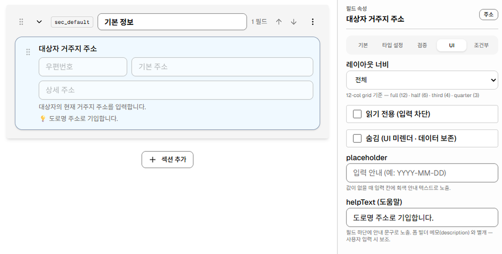
placeholder — 값이 없을 때 입력란에 표시할 흐린 글씨입니다. 캡처에서는 공란이고, 안내 문구 “입력 안내 (예: YYYY-MM-DD)” 만 보입니다.
그런데도 캔버스 세 칸에는 “우편번호” · “기본 주소” · “상세 주소” 가 이미 표시되어 있습니다. 이 문구는 placeholder 가 아니라 타입이 정해 둔 값이며, 위 칸에 무엇을 입력해도 바뀌지 않습니다.
helpText (도움말) — 필드 아래에 표시할 안내 문구입니다. 캡처는 “도로명 주소로 기입합니다.” 입니다.
세 칸 아래에 💡 아이콘과 함께 표시됩니다. 이쪽은 정상 동작합니다.
description (도움말) — 2.1 에서 입력한 문구입니다. helpText 와 다른 항목이며 아이콘 없이 윗줄에 표시됩니다.
유의사항
필수 확인 데이터 손상 · 폼 완료 불가
- • ⛔ placeholder 에 적은 문구는 어디에도 표시되지 않습니다. 세 칸의 안내는 타입이 고정한 값이라 바꿀 수 없습니다 — 여기에 적어 두면 설정했다고 믿은 안내가 기록자에게 닿지 않습니다. 4.1
- • 안내는 전부 helpText 에 적으십시오. 캡처처럼 “도로명 주소로 기입합니다.” 라고 적으면 지번 주소와 섞이는 것을 막을 수 있습니다 — 주소에서 저작자가 쓸 수 있는 유일한 안내 자리입니다.
오해하기 쉬운 동작
- • 우편번호 자릿수 같은 형식 안내도 helpText 로만 전달됩니다. 검증으로는 강제할 수 없으므로3.1 · 3.2, 이 문구가 사실상 유일한 통제 수단입니다.
- • description 과 helpText 는 함께 표시됩니다. 둘 다 입력하면 두 줄이 되므로 같은 내용을 두 번 적지 마십시오. 2.1
조건부 탭 — 다른 값에 따라 표시하기
- 5.1조건부 표시 활성
- 5.2조건 설정
5.1조건부 표시 활성
개요
다른 필드의 값에 따라 이 필드를 표시하거나 감추는 기능입니다. 주소와 특히 잘 맞는 기능입니다 — 수집에 동의하지 않은 피험자에게 주소를 아예 묻지 않으면 근거 없이 개인정보를 수집하지 않게 됩니다.
화면 설명
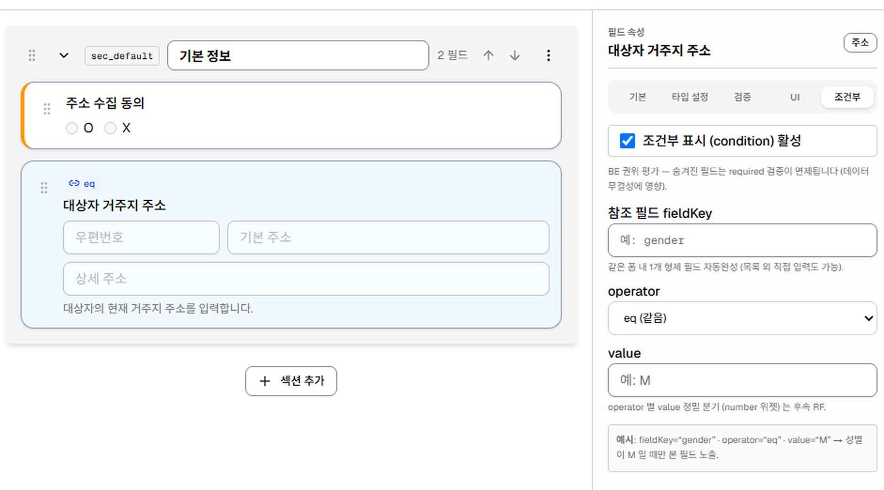
조건부 표시 (condition) 활성 — 선택하면 아래 조건 설정이 표시됩니다.
캔버스 필드 위에 🔗 eq 배지가 표시되어 조건이 적용되었음을 알립니다.
참조 필드 fieldKey — 조건의 기준이 되는 같은 폼 안의 다른 필드입니다. 같은 폼의 형제 필드가 자동완성되며, 목록에 없는 값은 직접 입력할 수도 있습니다.
operator — 비교 방법입니다. 기본값은 eq (같음) 입니다.
value — 비교할 값입니다. 참조 필드의 저장값을 입력합니다. 5.2
⚠ 화면 안내 — “숨겨진 필드는 required 검증이 면제됩니다 (데이터 무결성에 영향).” 조건 판정은 시스템이 수행합니다.
하단 예시 — fieldKey="gender" · operator="eq" · value="M" → 성별이 M 일 때만 본 필드 노출.
유의사항
필수 확인 데이터 손상 · 폼 완료 불가
- • ⛔ 조건을 설정하면 필수 검증이 면제됩니다. 조건이 맞지 않아 숨겨진 동안에는 그 필드가 필수여도 비어 있는 상태로 폼이 완료됩니다.
- • ⛔ 이미 입력한 뒤에 조건이 거짓이 되면 주소가 화면에서 사라집니다. 세 칸의 값은 그대로 남으므로, 동의를 나중에 철회한 경우 남아 있는 주소를 따로 지워야 합니다. 4.3
오해하기 쉬운 동작
- • 개인정보는 필요한 경우에만 묻는 것이 원칙입니다. 수집 동의와 주소 입력을 조건으로 묶으면 동의하지 않은 피험자의 주소가 애초에 들어오지 않습니다. 3.3
참고
- • 조건을 활성화하고 참조 필드를 공란으로 두면 조건이 성립하지 않습니다. 반드시 ②~④를 모두 입력하십시오. 5.2
5.2조건 설정
개요
5.1 에서 활성화한 조건을 끝까지 입력한 상태입니다. 이 설정이면 「주소 수집 동의」 필드의 값이 1 일 때만 주소 입력란이 화면에 표시됩니다. 참조 필드가 단일 선택이므로 value 칸에는 그 선택지의 저장값을 적어야 합니다.
화면 설명
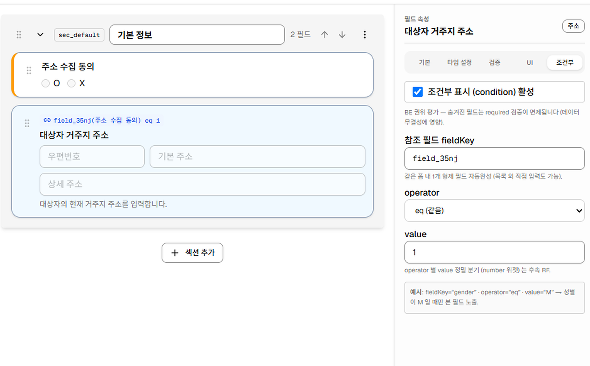
주소 수집 동의 가 1 일 때만 표시되도록 설정한 상태참조 필드 fieldKey = field_35nj — 같은 폼의 「주소 수집 동의」 필드를 가리킵니다.
①~③을 모두 입력한 결과 — 캔버스 배지가 🔗 field_35nj(주소 수집 동의) eq 1 로 구체화됩니다.
operator = eq (같음)
value = 1 — 화면에 보이는 O 가 아니라 그 선택지의 저장값을 입력합니다.
⚠ 화면 안내 — “숨겨진 필드는 required 검증이 면제됩니다 (데이터 무결성에 영향).”
하단 예시 — fieldKey="gender" · operator="eq" · value="M" → 성별이 M 일 때만 본 필드 노출.
유의사항
필수 확인 데이터 손상 · 폼 완료 불가
- • ⛔ value 에는 화면 문구가 아니라 저장값을 입력합니다. 「주소 수집 동의」 가 화면에
O·X로 보인다고O라고 적으면 조건이 성립하지 않아 주소 칸이 끝까지 표시되지 않습니다. 참조할 필드의 선택지 목록에서 저장값을 먼저 확인하십시오. - • ⛔ 참조 필드의 저장값을 바꾸면 조건이 조용히 깨집니다. 저장값을
1에서Y로 바꾸면 이 조건은 오류 없이 그냥 성립하지 않게 됩니다 — 그래서 발행 후 저장값 변경이 위험합니다. - • 같은 관계를 검증 규칙3.3으로도 만들 수 있습니다. 둘 다 걸면 묻지도 않으면서 저장도 막는 중복이 되므로 한쪽만 사용하십시오.
오해하기 쉬운 동작
- • 설정한 뒤 미리보기로 확인하십시오. 기준 값을 바꿔 가며 세 칸이 실제로 나타나고 사라지는지 확인해야 합니다.
부록
- 6.1탭별 설정 항목 한눈에 보기
- 6.2반드시 기억할 것 · 다루지 않은 것
6.1탭별 설정 항목 한눈에 보기
탭별 설정 항목
| 탭 | 항목 | 무엇을 정하는가 | 본문 |
|---|---|---|---|
| 기본 | fieldKey | 세 칸을 묶은 하나의 저장 키 (저장 후 변경 금지) | 2.1 |
| label (표시명) | 화면에 표시되는 항목 이름 — 어느 시점의 어떤 주소인지 밝힐 것 | 2.1 | |
| description (도움말) | 세 칸 아래 보조 설명 | 2.1 | |
| 필수 입력 | 반드시 입력해야 하는지 — ⚠ 세 칸 중 하나만 채워도 통과 | 2.2 | |
| SDV 검증 대상 | CRA 원자료 대조 대상인지 — 주소를 검사할 수 있는 유일한 단계 | 2.3 | |
| AE 의미 역할 | 이 타입은 지정 대상이 아니다 | 1.1 | |
| 미측정 선언 허용 | “주소 미상” 을 남기는 수단 — 이 타입에 특히 필요 | 2.4 | |
| 타입 설정 | (전부) | 항목이 하나도 없다 — 기본값조차 지정할 수 없다 | 6.2 |
| 검증 | ruleType | 「다른 필드와 비교」 만 동작한다 | 3.2 · 3.3 |
| 형식 (정규식) | ⛔ 걸면 저장이 끝까지 막힌다 — 사용 금지 | 3.2 | |
| 값 범위 · 소수 자릿수 | ⛔ 조용히 아무 일도 하지 않는다 — 사용 금지 | 3.2 | |
| message · 위반 시 | 위반 문구(공란 금지) · 다른 필드와 비교는 저장 차단 고정 | 3.2 · 3.3 | |
| UI | 레이아웃 너비 | 12-col grid 상의 폭 — 전체 권장 (절반에서 이미 문구가 잘린다) | 4.2 |
| 읽기 전용 | 보여 주되 고치지 못하게 — 세 칸 일괄 | 4.3 | |
| 숨김 | 화면 미표시 — 세 칸 일괄 · 저장된 값은 그대로 남는다 | 4.3 | |
| placeholder · helpText | ⛔ placeholder 는 적용되지 않는다 · helpText 만 동작 | 4.4 | |
| 조건부 | 조건 활성 | 조건부 표시 사용 여부 (필수 검증 면제) | 5.1 |
| 참조 필드 fieldKey | 조건의 기준이 되는 같은 폼의 필드 | 5.2 | |
| operator · value | 비교 방법과 비교할 값 (저장값을 입력) | 5.2 |
전화번호 · 이메일 타입과 다른 점
| 항목 | 전화번호 · 이메일 | 주소 |
|---|---|---|
| 입력 칸 수 | 한 칸 | 세 칸을 한 필드로 — 저장은 하나로 묶인다 1.1 |
| 기본값 (defaultValue) | 지정할 수 있다 | 항목 자체가 없다 6.2 |
| 형식 검사 | 이메일은 항상 적용 | 전혀 없다 — 우편번호 자릿수도 보지 않는다 3.1 |
| 검증 탭 정규식 | 도메인 제한 등에 사용 | ⛔ 걸면 저장이 영구 차단된다 3.2 |
| placeholder | 정상 적용 | ⛔ 적용되지 않는다 — helpText 만 4.4 |
| 레이아웃 너비 | 절반까지 무난 | 전체 권장 — 절반에서 문구가 잘린다 4.2 |
6.2반드시 기억할 것 · 다루지 않은 것
반드시 기억할 것
필수 확인 데이터 손상 · 폼 완료 불가
- • 검증 탭의 「형식 (정규식)」 을 주소에 걸지 마십시오. 무엇을 입력해도 위반이 되어 기록자가 폼을 저장할 방법이 없어집니다. 3.2
- • 필수 입력은 세 칸 중 하나만 채워도 통과합니다. 우편번호만 적어도 폼이 완료되므로, 세 칸을 모두 받아야 한다면 도움말로 안내하고 SDV 에서 확인하십시오. 2.2 · 2.3
- • placeholder 에 적은 문구는 어디에도 표시되지 않습니다. 안내는 전부 helpText 에 적으십시오. 4.4
- • 「값 범위」 · 「소수 자릿수」 는 아무 일도 하지 않습니다. 오류도 내지 않으므로 규칙을 걸었다고 믿은 채로 넘어가게 됩니다. 3.2
- • 주소는 개인정보입니다. 수집 동의와 묶어 조건부로 묻고, 동의가 철회되면 세 칸을 모두 지우십시오. 3.3 · 4.3 · 5.1
- • 1/3 · 1/4 폭을 쓰지 마십시오. 절반에서 이미 우편번호 칸의 안내 문구가 잘립니다. 4.2
오해하기 쉬운 동작
- • 시스템이 걸어 주는 검사가 하나도 없습니다. 우편번호와 기본 주소가 서로 다른 지역이어도 저장됩니다 — 대조는 SDV 단계에서 사람이 해야 합니다. 2.3 · 3.1
- • 세 칸이지만 하나의 필드입니다. 필수 · 읽기 전용 · 숨김 · 미측정 선언이 모두 세 칸에 한꺼번에 적용됩니다. 1.1 · 4.3
- • 칸별로 관리해야 한다면 타입을 나누십시오. 우편번호만 자릿수를 강제하고 싶다면 단일 행 텍스트 필드 세 개로 만드는 편이 낫습니다. 2.2 · 3.1
참고
- • 변경 이력에는 세 칸이 묶여 기록됩니다.
(06234) 서울특별시 강남구 테헤란로 123 5층 501호처럼 한 줄로 남습니다.
이 문서에서 다루지 않은 것
※ 타입 설정 탭 — 주소에는 설정 항목이 하나도 없습니다. 전화번호 · 이메일에 있는 기본값(defaultValue) 항목조차 표시되지 않습니다 — 세 칸을 묶은 값이라 미리 채워 둘 수단이 제공되지 않기 때문입니다. 그래서 이 매뉴얼에는 타입 설정 장이 없고 2장 다음이 검증 탭입니다. 1.1
우편번호 검색 (주소 찾기) — 제공되지 않습니다. 세 칸 모두 직접 입력이며, 지도나 검색 창이 열리지 않습니다. 1.1
칸별 필수 · 칸별 검증 — 「우편번호만 필수」 같은 설정은 어느 탭에도 없습니다. 시스템은 세 칸을 하나의 값으로 다룹니다. 2.2
우편번호 형식 검사 — 자릿수를 강제하는 항목이 없습니다. 정규식도 주소에서는 동작하지 않으므로3.2, 자릿수가 중요하다면 단일 행 텍스트 필드로 분리하십시오.
자동 계산 (calculation) — 타입 설정 탭에 체크박스는 있으나 주소에는 산출값을 옮길 표현형이 없어 잠긴 빈 칸이 됩니다. 수식으로 값을 산출하는 기능이므로 숫자 타입에서 사용하십시오.
프로젝트 검증 규칙에서의 참조 — 다른 폼의 값을 보는 「프로젝트 검증 규칙」 화면에서는 주소 필드를 참조 대상으로 고를 수 없습니다. 값이 세 칸 묶음이라 크기 비교가 성립하지 않기 때문입니다. 3.1
AE 의미 역할 — 기본 탭에 항목은 있으나 이 타입은 지정 대상이 아닙니다. 예/아니오 또는 단일 선택 필드에 지정하십시오. 1.1